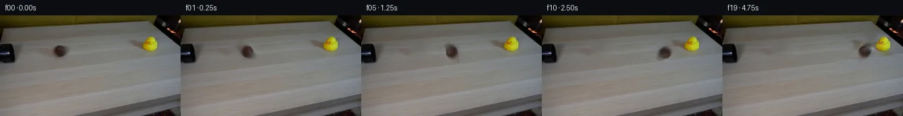

![首帧]()

Round 00
2026-11-04T19:21:15.759699+00:00像素候选变化代码 +201/−0inspection 更新
pixels 6b4afce2d844c343 · code 97739702aebf3ac3
查看本轮 generate.py 真实 diff
--- previous/generate.py
+++ current/generate.py
@@ -0,0 +1,201 @@
+#!/usr/bin/env python3
+"""Generate the 20-frame locked-camera ball/duck continuation."""
+
+from pathlib import Path
+
+import cv2
+import numpy as np
+from PIL import Image, ImageDraw, ImageFont
+
+import artifact_io
+
+
+ROOT = Path(__file__).resolve().parent
+H, W = 144, 256
+
+
+def make_support_masks() -> tuple[np.ndarray, np.ndarray]:
+ """Return masks covering the complete source ball and duck/shadow footprints."""
+ ball = np.zeros((H, W), np.uint8)
+ cv2.ellipse(ball, (84, 52), (17, 14), 0, 0, 360, 255, -1, cv2.LINE_AA)
+ ball = np.where(ball > 2, 255, 0).astype(np.uint8)
+
+ duck = np.zeros((H, W), np.uint8)
+ # Includes the bright duck and its long, faint left/down contact shadow.
+ polygon = np.array(
+ [[198, 25], [219, 25], [228, 38], [230, 55], [221, 59],
+ [177, 59], [177, 45], [198, 38]],
+ dtype=np.int32,
+ )
+ cv2.fillPoly(duck, [polygon], 255)
+ return ball, duck
+
+
+def make_clean_plate(source: np.ndarray, mask: np.ndarray) -> np.ndarray:
+ """Remove source objects while retaining the source everywhere else."""
+ # TELEA is confined to the two small masks; every unmasked pixel is untouched.
+ plate_bgr = cv2.inpaint(cv2.cvtColor(source, cv2.COLOR_RGB2BGR), mask, 5, cv2.INPAINT_TELEA)
+ plate = cv2.cvtColor(plate_bgr, cv2.COLOR_BGR2RGB)
+ plate[mask == 0] = source[mask == 0]
+ return plate
+
+
+def residual_layer(source: np.ndarray, plate: np.ndarray, support: np.ndarray) -> np.ndarray:
+ layer = source.astype(np.float32) - plate.astype(np.float32)
+ layer[support == 0] = 0.0
+ return layer
+
+
+def affine_residual(
+ residual: np.ndarray,
+ center: tuple[float, float],
+ dx: float,
+ dy: float,
+ angle_deg: float,
+ scale_x: float = 1.0,
+ scale_y: float = 1.0,
+) -> np.ndarray:
+ """Transform a signed RGB residual about an image-space pivot."""
+ cx, cy = center
+ theta = np.deg2rad(angle_deg)
+ c, s = np.cos(theta), np.sin(theta)
+ # Forward transform in image coordinates, expressed for cv2.warpAffine.
+ a = c * scale_x
+ b = s * scale_y
+ d = -s * scale_x
+ e = c * scale_y
+ tx = cx + dx - a * cx - b * cy
+ ty = cy + dy - d * cx - e * cy
+ matrix = np.array([[a, b, tx], [d, e, ty]], dtype=np.float32)
+ return cv2.warpAffine(
+ residual,
+ matrix,
+ (W, H),
+ flags=cv2.INTER_LINEAR,
+ borderMode=cv2.BORDER_CONSTANT,
+ borderValue=(0, 0, 0),
+ )
+
+
+def add_layer(base: np.ndarray, layer: np.ndarray) -> np.ndarray:
+ return np.clip(base.astype(np.float32) + layer, 0, 255)
+
+
+def synthesize() -> np.ndarray:
+ source = np.asarray(Image.open(ROOT / "first_frame.png").convert("RGB"), dtype=np.uint8)
+ if source.shape != (H, W, 3):
+ raise ValueError(f"Unexpected source shape: {source.shape}")
… diff truncated; 114 more lines …